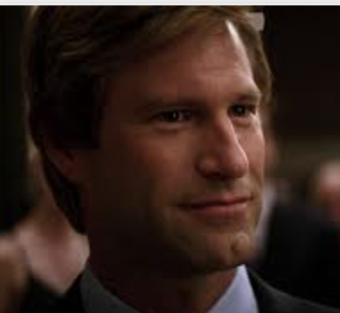
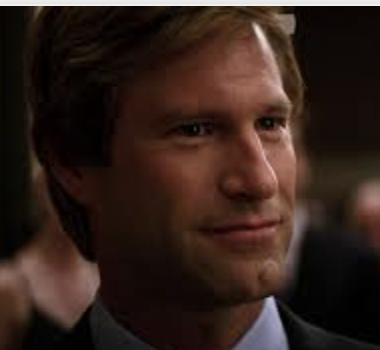

Harvey Dent was a newly appointed District Attorney for Gotham. He was one of the first DAs to challenge the rule of the mob, which would often pay off government officials as well as police officers. Harvey Dent tried and sentenced hundreds of criminals. Although those of higher importance could often be bailed out, he managed to lock up many lower level criminals, which he viewed as making a difference.
Harvey was in love with Rachel Dawes, a childhood friend of Bruce Wayne, and one of the few people who know Batman's identity. Bruce was also in love with Rachel at the time, although Rachel did not have these same feelings towards him, and has moved on from her past. During an encounter with the Joker at Bruce Wayne's penthouse, the Joker grabs Rachel at gunpoint, and eventually throws her out of the window to create a distraction.
Batman, in his suit, jumps off the building and cushiosn the fall with his own body. From this, the Joker realizes the importance of Rachel to Batman, and uses this to his advantage.
With the help of corrupt officers, Joker manages to take both Harvey Dent and Rachel Dawes captive. He has them both tied up in separate warehouses full of oil drums with explosives and a timer for their explosion. They are on call with each other, and can only sit there and talk to each other until they die. Harvey is hopeful that someone will save Rachel and attempts to comfort her.
The Joker contacts Batman and the police commisioner Gordon, giving the locations of each person, as well as the very short amount of time they hvae. However, the Joker switches the addresses of each person. Batman went to where he believed Rachel was while Gordon went to where Harvey was supposed to be. Batman manages to just barely save Harvey, whose face catches on fire, while Gordon is too slow and the warehouse Rachel was in blows up in front of his eyes. Harvey is devastated that he was saved and Rachel wasn't.
While in the hospital for his burned face, the Joker talks to Harvey. Although initially very mad at the Joker for causing Rachel's death, Harvey then turns his focus to rooting out the corrupt officers who physically kidnapped Rachel. With a pistol and a coin, Harvey, or two-face in the comics, targets and interogates police officers trying to find who caught Rachel.
At this point, Harvey has become much scarier. He flips his coin to determine whether to shoot and kill his suspects. However, he flips until it lands where he wants, which ultimately means killing everyone he suspected. Eventually, he gets to Gordon, and holds his son at gun point. Batman saves the day, being Batman, and Harvey dies from falling.
Batman then decided to take the blame for Harvey's killings to prevent Harvey's work of imprisoning criminals from being reversed. This is the birth of the name the Dark Knight, which is supposed to be the opposite of a white knight in shining armor. Instead of being viewed as a hero and looked up to, Batman must be viewed as a criminal, vigilante, and cop killer, in order to keep criminals in prison and help Gotham.